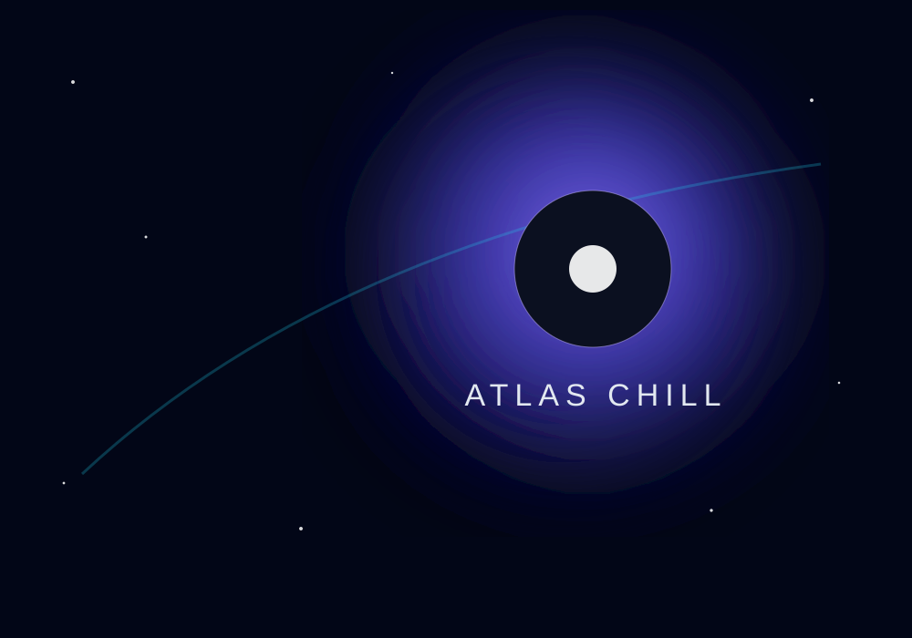
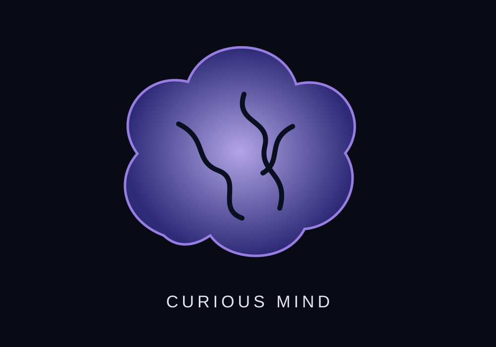
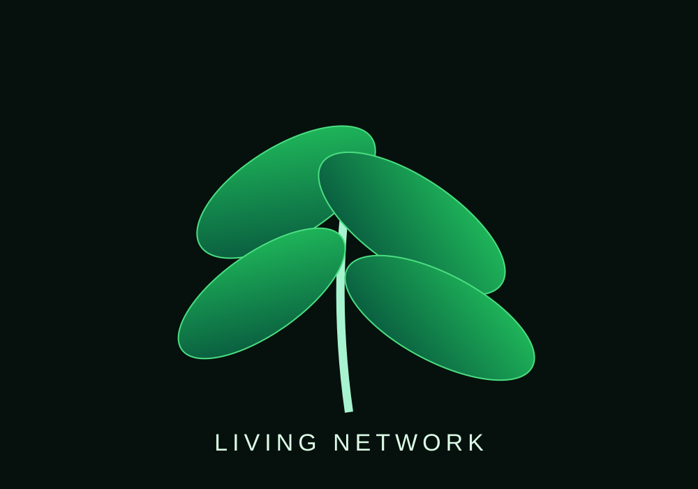
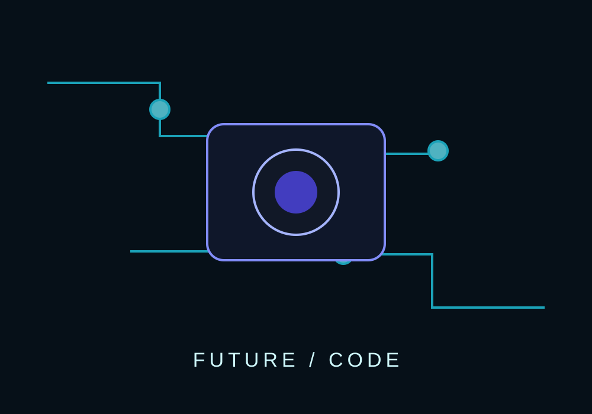
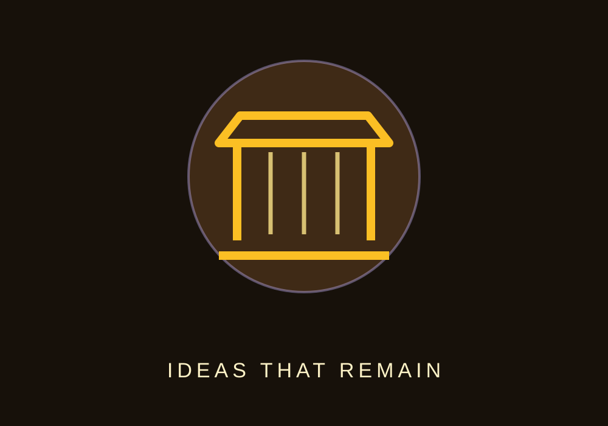

DÉCOUVERTE DU JOUR
Pourquoi le ciel est bleu ?
La lumière bleue est davantage diffusée par l'atmosphère terrestre que les autres couleurs visibles.
En savoir plus →🌍
Explore des mondes, réponds à des quiz, gagne de l'XP et construis ta propre bibliothèque de connaissances. Le but : devenir curieux sans avoir l'impression d'étudier.
La lumière bleue est davantage diffusée par l'atmosphère terrestre que les autres couleurs visibles.
En savoir plus →Des visuels originaux accompagnent les univers pour rendre la découverte plus immersive.





Six univers maintenant, puis des dizaines de capsules à débloquer au fil de ta curiosité.
Une découverte aléatoire, un mini-défi et un peu d'XP. Le hasard fait parfois très bien le professeur.